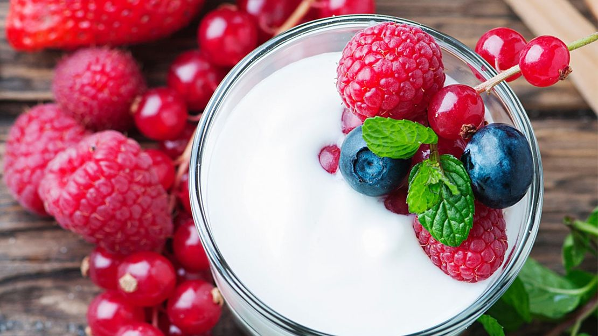

I love Yogurt!
Especially Greek Yogurt
What's the Difference Between Greek and Regular Yogurt?
Yogurt is a fermented dairy product that’s popular worldwide.
In recent years, a specific type called Greek yogurt has taken off among health enthusiasts.
Both Greek and regular yogurt are packed with high quality nutrients and offer multiple health benefits, but you may wonder what sets them apart.
This article explains the differences between Greek and regular yogurt to help you determine which to choose. a bowl of fresh blueberries topped with yogurt
How they’re made
Regular and Greek yogurt are cultured (or fermented) dairy products, along with sour cream, buttermilk, and kefir.
Fermented dairy products are made by converting lactose — milk’s naturally occurring sugar — into lactic acid by using certain bacteria, also called starter cultures.
In fact, both regular and Greek yogurt are made with the same main ingredients — fresh milk, plus Streptococcus thermophilus and Lactobacillus bulgaricus as starter cultures.
Yet, their taste and nutrients differ due to how they’re made.
📖 Learn more on Wikipedia